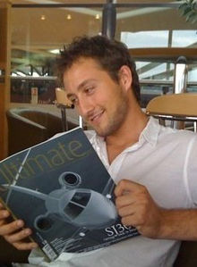

Joe Blackman is a serial entrepreneur and CEO of Collection 26, a celebrity event planning and design company. He sits as aMagistrate in Westminster Magistrates Court, previously sat in Cardiff Magistrates Court.[3] Blackman organises events for high-profile clients such as the Abu Dhabi royal family, 50 Cent and The Killers.
Blackman began planning events when he was thirteen years old, helping out on events at a local community centre before starting his first business while in university studying a BA degree in Stage Management at the Royal Welsh College of Music and Drama in 2003 and 2004. He began planning events on a freelance basis during this time. At the age of 20, he travelled to Qatar to help organise the 15th Asian Games for the International Olympics Committee.
In 2005, Blackman founded Collection 26, an event-planning company. He was 20 years old.[ Venture Wales, a business-support project of the Welsh government, supported Blackman's efforts with business advice.
Blackman plans parties and weddings for royalty, celebrities, and corporate customers. Following successful events in Abu Dhabi, he expanded Collection 26 to service customers in the Middle East in 2010.
Collection 26 has organised Africa Oye, the UK's largest African festival, every year since 2006.
Blackman has a Master's degree in Business Administration and is qualified in health and safety management by NEBOSH. He lectures part-time for an BA(Hons) Events Management degree course at the Cardiff Metropolitan University and has previous lectured at Liverpool Institute of Performing Arts on the Theatre and Performance Technology BA course.
In 2010 Blackman was honoured as an IoD (Institute of Directors) Young Director of the Year at a ceremony at the Lancaster London hotel.
Blackman became a magistrate, or Justice of the Peace, in Cardiff, Wales in 2008. At the age of 23, he was the youngest magistrate on the Cardiff bench, and one of the youngest in the UK
As of 2009 Blackman sits as a justice in Westminster Magistrates Court in Central London.
Blackman applied to be a magistrate after talking to a friend who already served on the bench.